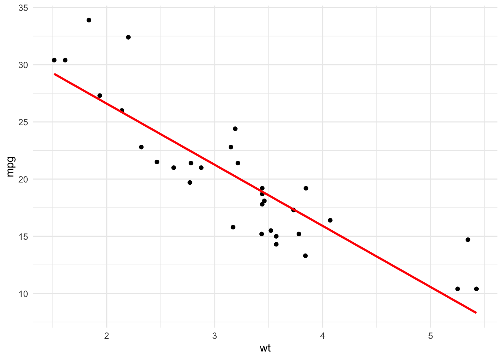
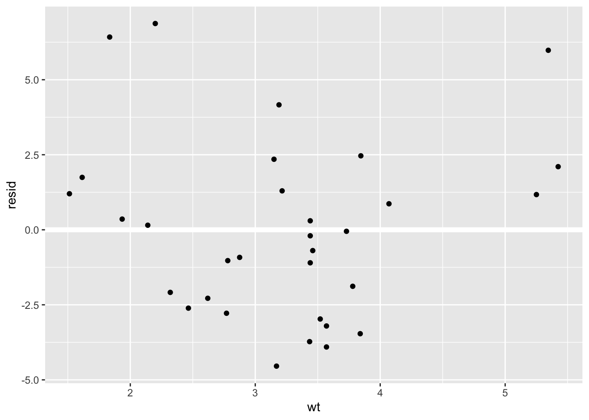
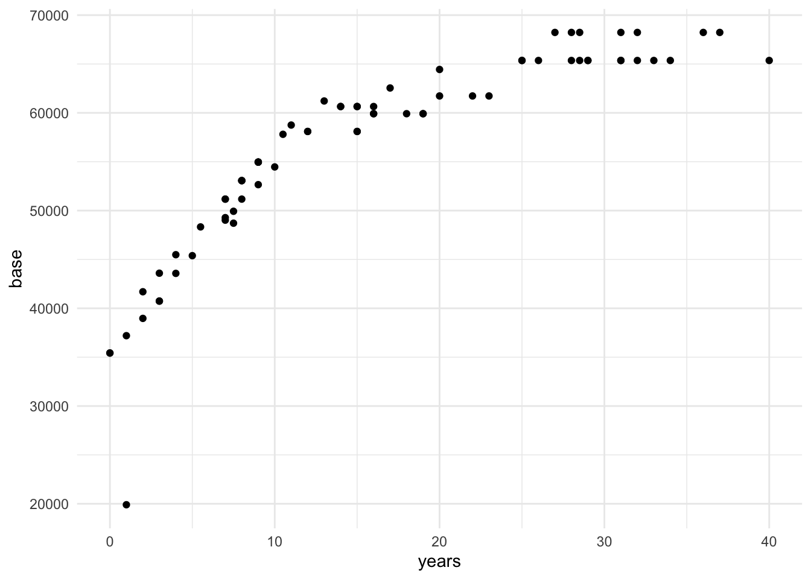

(Intercept) wt
37.285126 -5.344472 Linear Regression
As we have seen we have used Linear Regression to create a simple model. For obtaining the coefficients of the model formula we do as follows…
The first part of the function
mpg ~ wtis the formula. Equivalent too \(mpg = \beta_0 + \beta_1 \cdot wt\)coeffunction will return the values of both coefficients of the formula. Intercept is equal to \(\beta_0\) while the second number of equal to \(\beta_1\)
Linear Regression is an statistical model that explains the linear relation between a predictor \(x\) and one quantitative variable \(y\) with a certain error \(\epsilon\)
\[y = \beta_0 + \beta_1x + \epsilon\]
Take into account we won’t analyze and see the error \(\epsilon\) in this course, but it always exists and is important to analyze it.
Estimation of Coefficients
For estimating the values of \(\beta_0\) and \(\beta_1\) we use the available data.
The estimations found for each coefficient are the ones that minimize the vertical distance between the values and the model line.
Each estimation will be known as \(b_0\) and \(b_1\), making the function \(\dot y = b_0 + b_1x\) being \(\dot y\) the predicted value
Model Residuals
Residuals tell us how much far of the real value the predicted one is.
\[Residual = RealValue - PredictedValue = y - \dot y\] As the linear regression model is the one that minimizes the sum of vertical distances, is the same as telling the one that minimizes the residual sum of squares.
\[\sum_{i=1}^n[y_i - \dot y_i]^2 = \sum_{i=1}^n[y_i - (\beta_0 + \beta_1x)]^2 \]
Visualizing Models
When speaking about visualization about our models…
- The predictions of our models.
- The residuals of our models.
For doing this we will use modelr from tidyverse.
First we are going to create a grid of dots of the predicted variable.
# A tibble: 6 × 1
wt
<dbl>
1 1.51
2 1.62
3 1.84
4 1.94
5 2.14
6 2.2 We can add some predictions…
# Create the model
reg_mod <- lm(mpg ~ wt, data = mtcars)
# Add the predictions
grid <- grid %>%
add_predictions(reg_mod)
head(grid,6)# A tibble: 6 × 2
wt pred
<dbl> <dbl>
1 1.51 29.2
2 1.62 28.7
3 1.84 27.5
4 1.94 26.9
5 2.14 25.8
6 2.2 25.5A now we can visualize the model…
ggplot(mtcars, aes(wt)) +
geom_point(aes(y = mpg)) + theme_minimal() +
geom_line(aes(y = pred), data = grid, colour = "red", size = 1)Warning: Using `size` aesthetic for lines was deprecated in ggplot2 3.4.0.
ℹ Please use `linewidth` instead.
We can now add the residuals….
mtcars <- mtcars %>%
add_residuals(reg_mod)
ggplot(mtcars, aes(wt, resid)) +
geom_ref_line(h = 0) + geom_point()
To summarise
With the predictions we can find which pattern we have been able to capture.
With the residuals we can know which pattern has not been captured.
Using and understanding our models
What to do with our models?
Explain: explain the relation between \(y\) and \(x\) with the parameters \(\beta_0\) and \(\beta_1\)
Prediction: for a new value of \(x\) and obtain the equivalent value \(y\)
Interpreting linear regression
Using the last created model, we can use now broom library from tidyverse ecosystem, that offers multiple functions to optimize a create more efficient code and tasks.
# A tibble: 2 × 5
term estimate std.error statistic p.value
<chr> <dbl> <dbl> <dbl> <dbl>
1 (Intercept) 37.3 1.88 19.9 8.24e-19
2 wt -5.34 0.559 -9.56 1.29e-10Intercept
Our linear regression model is…
\[\dot{mpg} = \beta_0 + \beta_1wt\] \(\beta_0\) is the base value in a case of a zero value for \(wt\). This will be the predicted value in this case.
Eg. 0 as wt…
\[\dot{mpg} = \beta_0 + \beta_1 * 0 = \beta_0\]
Slope
Our linear regression model is…
\[\dot{mpg} = \beta_0 + \beta_1wt\]
\(\beta_1\) is the increase we can expect for change in the explainable variable \(wt\)
Eg. what happens if we increase 1 wt…
\[\beta_0 + \beta_1(wt + 1) = \beta_0 + \beta_1wt + \beta_1 = \dot{mpg} + \beta_1\]
Exercise: Experience and Salary
We will see this example where we will try to model the years of experience to the salary of a teacher. In the following cell we are preparing the data sample we are going to work with and make a first visualization of the varibales we want to explain.
library(openintro)
# Data preparation
grade <- sample(
c(rep("elementary", 20),
rep("middle", 25),
rep("high", 26))
)
teacher_sample <- teacher %>%
mutate(degree = factor(degree, c("MA", "BA")),
grade = grade)
# Visualization
ggplot(teacher_sample,
aes(x=years, y=base)) +
geom_point() + theme_minimal()
Part 1. Fit a linear model, find the coefficients of the formula and interpret them.
Part 2. Make a prediction for the salary of teacher with 15 years of experience in the field.
Categorical Linear Regression
We have started assuming \(x\) as a continuous value, but we can find situations where it is categorical.
In this case our normal formula \(y = \beta_0 + \beta_1x\) won’t fit the scenario as x is not a number. For example if x was a genre: male or female.
What we can do is to create a new variable that has a value of 0 and 1 depending if one category is selected. Let’s see it with an example.
We will see it with an example using the same data of the last exercise. Now we are going to analyze the salary depending on the grade…
# A tibble: 2 × 5
term estimate std.error statistic p.value
<chr> <dbl> <dbl> <dbl> <dbl>
1 (Intercept) 56610. 1777. 31.8 5.44e-43
2 degreeBA -352. 2398. -0.147 8.84e- 1R has created a indicator variable degreeBA; if the grade is BA takes value 1 otherwise 0.
In case of more than two variables it will create two or more indicator variables.
Base level is the one that will be assumed by the variable when the rest are 0. We must interpret coefficients respect base level.
So how we can interpret each coefficient…
# A tibble: 2 × 5
term estimate std.error statistic p.value
<chr> <dbl> <dbl> <dbl> <dbl>
1 (Intercept) 56610. 1777. 31.8 5.44e-43
2 degreeBA -352. 2398. -0.147 8.84e- 1Now we can add the predictions…
mod_base_degree <- lm(base ~ degree, data=teacher_sample)
grid <- teacher_sample %>%
data_grid(degree) %>%
add_predictions(mod_base_degree)
grid# A tibble: 2 × 2
degree pred
<fct> <dbl>
1 MA 56610.
2 BA 56257.Visualizing the predictions… what we have predict… average
Multiple Linear Regression
t is frequent to find scenarios where multiple predictor variables are found. The simplest linear model we can use is the multiple linear regression
\[ y = \beta_0 + \beta_1x_1 + \beta_2x_2 + \cdot\cdot\cdot + \beta_nx_n \]
The effect of each variable can be analyzed independently of the rest of variables.
We are going to explain it with the same example, now combining both Degree and Experience to explain the Salary…
# A tibble: 3 × 5
term estimate std.error statistic p.value
<chr> <dbl> <dbl> <dbl> <dbl>
1 (Intercept) 44838. 1156. 38.8 4.11e-48
2 years 818. 54.0 15.2 1.75e-23
3 degreeBA -2560. 1164. -2.20 3.12e- 2Adding the predictions
# A tibble: 76 × 3
years degree pred
<dbl> <fct> <dbl>
1 0 MA 44838.
2 0 BA 42278.
3 1 MA 45656.
4 1 BA 43096.
5 2 MA 46474.
6 2 BA 43914.
7 3 MA 47292.
8 3 BA 44732.
9 4 MA 48110.
10 4 BA 45550.
# ℹ 66 more rowsVisualizing the model and the predictions…